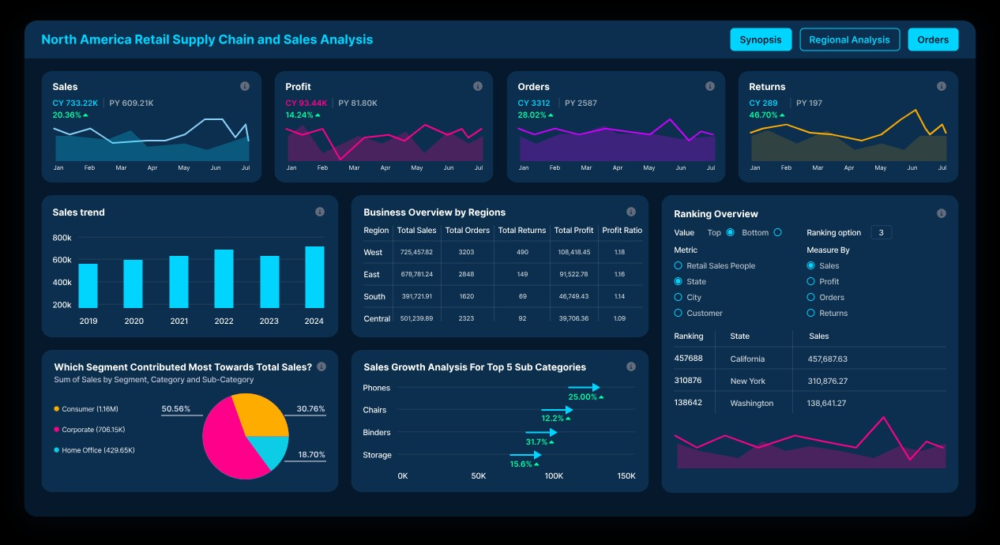

Minhas Capacidades

Web Design
Sou um web designer, profissional responsável por criar e desenvolver o visual e a usabilidade de sites na internet. Meu trabalho envolve o design da interface (layout, cores, tipografia, imagens) e a experiência do usuário (UX), garantindo que o site seja esteticamente agradável, funcional e acessível em diferentes dispositivos.
Matemático
Como matemático web developer trago uma forte base lógica e analítica, o que facilita o aprendizado de linguagens de programação e resolução de problemas complexos, já que o raciocínio matemático ajuda na escrita de códigos limpos, eficientes e na compreensão de estruturas como algoritmos e bancos de dados.
